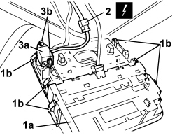

5570T14 MOBILE PHONE HANDS-FREE SYSTEM MICROPHONE - R R
- Path
- Procedures > 55 ELECTRICAL EQUIPMENT > 5570 ACCESSORIES > 5570T CAR RADIO AND CAR TELEPHONE > 5570T14 MOBILE PHONE HANDS-FREE SYSTEM MICROPHONE - R R
- Kind
- repair procedure (removal / refitting; the operation number is the code)
- Applies to
- all engines; all production periods
- Interactive page
- https://sloeber94.github.io/elrnDB/alfa/159/en/#/939011080
Applies to: all engines; all production periods
 Removing
Removing
 Refitting
Refitting1. Move the front courtesy light assembly (1a), releasing the retainers (1b).
2. Disconnect the electrical connection.
Description | Component |
|---|---|
FRONT COURTESY LIGHT |
3. Remove the microphone (3a) releasing the retainers (3b).

Applies to: all engines; all production periods
Refitting
Removing- Check that the microphone is not damaged.
- Position the microphone and attach the retainers.
- Connect the electrical connection.
- Position the front courtesy light assembly and attach the retainers.